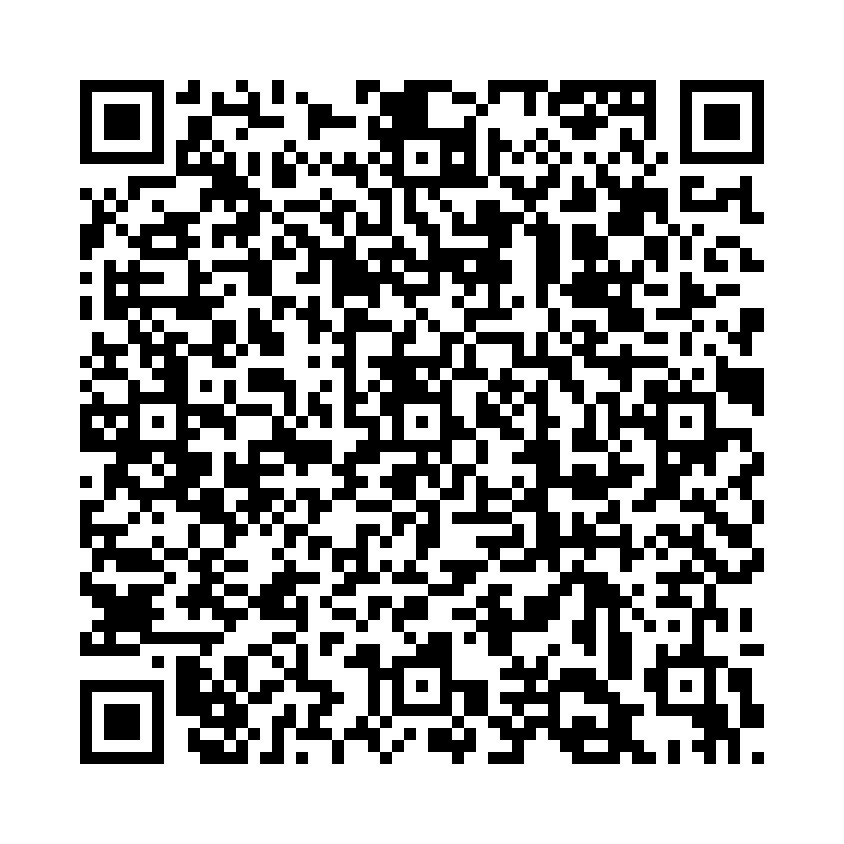

関係代名詞の非制限用法「which」は、主文の内容に追加情報を加えるために使われます。この「which節」は主文とカンマで区切られ、主文全体またはその一部を補足する役割を果たします。
例：
関係代名詞「which」の非制限用法に関連する用語：
以下の単語を並べ替えて正しい文章を作りましょう。（和訳も参考にしてください）

問題1: (the Sun / revolves / Earth / the / which / takes / around / about 365 days) - 地球は太陽の周りを回っており、それには約365日かかります。
解答: The Earth revolves around the Sun, which takes about 365 days。
解説: 「which」は主文の「太陽の周りを回ること」に対して「それには365日かかる」という補足情報を追加しています。
問題2: (this book / written / is / by my friend / which / has / won several awards) - この本は私の友人が書いたもので、いくつかの賞を受賞しています。
解答: This book is written by my friend, which has won several awards。
解説: 「which」は「本」に対して「いくつかの賞を受賞している」という補足情報を追加しています。
問題3: (my father / bought a car / which / was very expensive) - 私の父は車を買いましたが、それはとても高価でした。
解答: My father bought a car, which was very expensive。
解説: 「which」が「車」に対する補足情報として「それは高価である」という意味を加えています。
問題4: (the museum / I visited / has a rare collection / which / is worth millions) - 私が訪れたその博物館には、数百万ドルの価値がある希少なコレクションがあります。
解答: The museum I visited has a rare collection, which is worth millions。
解説: 「which」が「希少なコレクション」に対して「数百万ドルの価値がある」という補足情報を追加しています。
問題5: (our team / won the game / which / made everyone happy) - 私たちのチームは試合に勝ち、それはみんなを喜ばせました。
解答: Our team won the game, which made everyone happy。
解説: 「which」は「試合に勝ったこと」に対して「みんなを喜ばせた」という追加情報を提供しています。